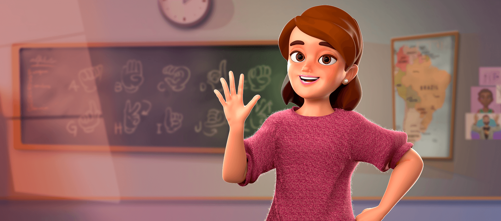
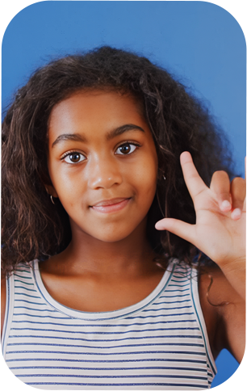
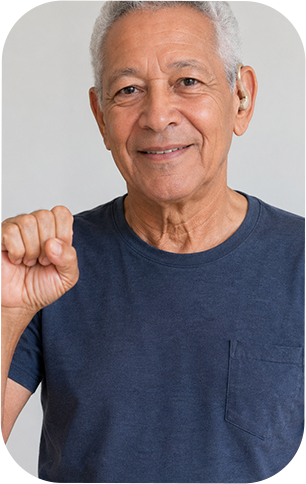
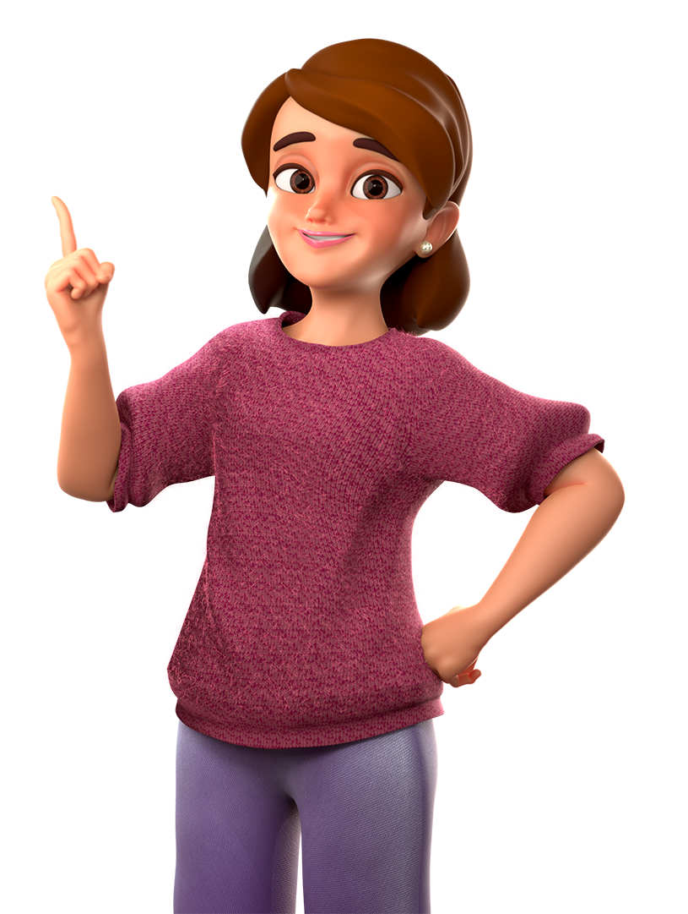

Uma plataforma tridimensional para introdução ao ensino da Língua Brasileira de Sinais – LIBRAS. Aprenda o alfabeto datilológico de uma maneira interativa e divertida!


O Librasverso é um protótipo de plataforma de ensino de LIBRAS, projeto sem fins lucrativos desenvolvido no âmbito do Programa de Pós-Graduação em Design da Universidade de Brasília.
O objetivo é apresentar o alfabeto manual de Libras de forma divertida e estimulante — despertando a curiosidade e o interesse na língua e promovendo inclusão por meio da educação.
Importante: as lições são apresentadas por personagens animados em 3D e não têm a pretensão de substituir intérpretes humanos. O formato deve ser encarado como um complemento a aulas com professores reais.
Língua Brasileira de Sinais — reconhecida oficialmente no Brasil pela Lei 10.436/2002 como meio legal de comunicação e expressão das comunidades surdas. Possui gramática própria, independente do português.
Existem cerca de 10 milhões de pessoas com algum nível de deficiência auditiva no Brasil (IBGE 2010). Aprender LIBRAS é um ato de inclusão, empatia e ampliação da comunicação com uma comunidade inteira.
Mude características do seu intérprete de LIBRAS tridimensional e escolha diferentes opções de cenário.
Utilize recursos do ambiente 3D para melhor visualizar os sinais: rotação da câmera em torno do avatar e zoom.
O uso de uma plataforma tridimensional proporciona uma experiência de aprendizado fora do convencional e divertida.

A Lia é a nossa intérprete virtual de LIBRAS e apresentará sinais indispensáveis. Mude a sua aparência e bons estudos!
Conhecer a LiaO projeto foi desenvolvido no Programa de Pós-graduação em Design da Universidade de Brasília (Brasil). O objetivo principal da pesquisa foi investigar se as possibilidades de customização e interação em ambiente 3D são relevantes para o ensino de LIBRAS em comparação ao ensino com vídeos animados, ou seja, sem possibilidade de customização e interação. Os resultados mostraram que a experiência com o uso de avatar foi considerada satisfatória pelos usuários, sem resistência significativa ao seu uso, tanto na versão interativa como em vídeo. A maioria dos voluntários considerou que o avatar em questão apresentava características suficientes para transmitir os sinais de LIBRAS. Também acreditam que o uso de avatar ajuda a captar a atenção durante as lições e tornam a experiência de aprendizado estimulante.
Na avaliação comparativa entre as duas versões, a plataforma 3D foi apontada por 51,9% como modelo mais eficaz e 46,2% acreditam que é o vídeo animado. Algumas questões que são exclusivas da versão em ambiente 3D mostraram-se indispensáveis para a maioria dos usuários, como a possibilidade de customização do avatar, que está relacionada à representatividade. A opção mais citada foi "representatividade cultural" (55,8%), seguida por "diversidade de raças" e "aspectos biofísicos" (50% cada), "diversidade de gênero" (42,3%), "aparência, moda e estilo" (38,5%), "sazonalidades" (26,9%) e "orientação sexual" (23,1%). A maioria também indicou que prefere criar avatares que se aproximem da sua real imagem ou de como se percebem.
Além disso, os usuários mostraram majoritariamente o interesse na flexibilidade de mudança da imagem de plano de fundo da plataforma e visualização em torno do avatar, possível apenas na versão em ambiente 3D. Conclui-se que apesar de não ter havido diferença discrepante de avaliação entre os dois formatos, a plataforma 3D sobressai-se à medida que características de customização e flexibilidade de visualização, exclusivas deste formato, mostraram-se importantes na avaliação dos usuários. Este estudo, portanto, destaca aspectos a serem considerados na concepção de ferramentas de aprendizado de LIBRAS, tanto no cuidado com a reprodução dos sinais, quanto na contemplação de recursos de interação e representatividade.
Acesse os trabalhos acadêmicos que documentam os resultados e a metodologia desta pesquisa.
A equipe por trás do LibrasVerso
Doutorando e Mestre em Design pela Universidade de Brasília (2024). Idealizador e desenvolvedor da plataforma LibrasVerso. Pesquisador de interfaces digitais acessíveis, tecnologias 3D e gamificação aplicadas à educação.
Pesquisador da área educacional, bacharel e mestre em Engenharia Mecânica e doutor em Ciências Mecânicas pela UnB. Professor da Faculdade de Ciências e Tecnologias em Engenharia, do Mestrado profissional em Matemática e do PPG em Design, onde orienta trabalhos em Design educacional.
Professora titular do Departamento de Design da UnB. Doutora e mestre em Tipografia e Comunicação Gráfica pela Universidade de Reading (Reino Unido), com pós-doutorado pela UFSC. Líder do Grupo de Pesquisa em Design da Informação da UnB (desde 2008) e membro do PPG Design.